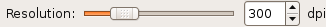

| GNOME Scan UI Reference Manual | ||||
|---|---|---|---|---|
GnomeScanResolutionSelectorGnomeScanResolutionSelector — A Widget that allow to selection the scan resolution |
 |
GnomeScanResolutionSelector;
GtkWidget* gnome_scan_resolution_selector_new
(GnomeScanContext *context);
GObject
+----GInitiallyUnowned
+----GtkObject
+----GtkWidget
+----GtkContainer
+----GtkTable
+----GnomeScanResolutionSelector
On device selection, GnomeScanResolutionSelector updates its range to reflect the possible resolution. This widget is very close to the Gnome HIG 2.0, except that no label is shown at each ends of the GtkScale.
typedef struct _GnomeScanResolutionSelector GnomeScanResolutionSelector;
GtkWidget* gnome_scan_resolution_selector_new
(GnomeScanContext *context);
Create a new GnomeScanResolutionSelector connected to context.
context : |
a GnomeScanContext |
| Returns : | a new GnomeScanResolutionSelector |
context" property"context" GnomeScanContext : Read / Write
The GnomeScanContext the widget is connected to.